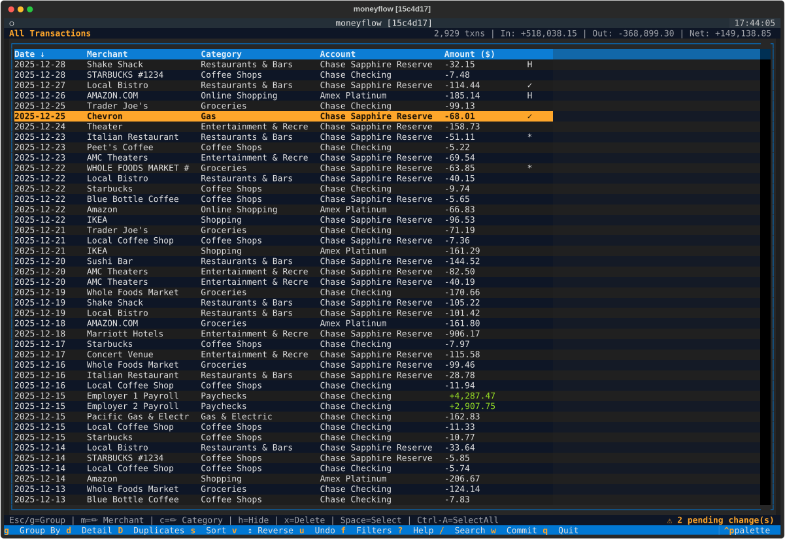
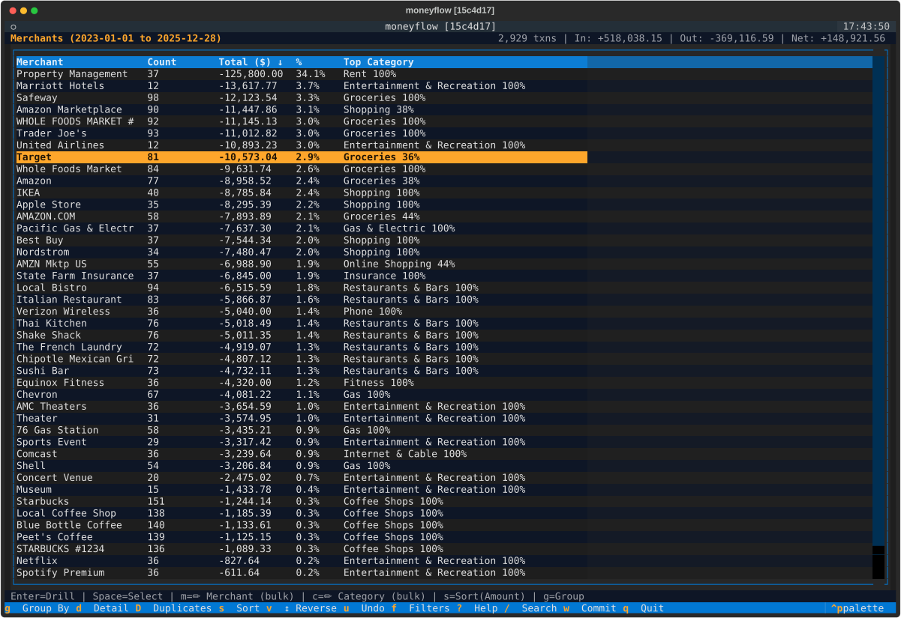
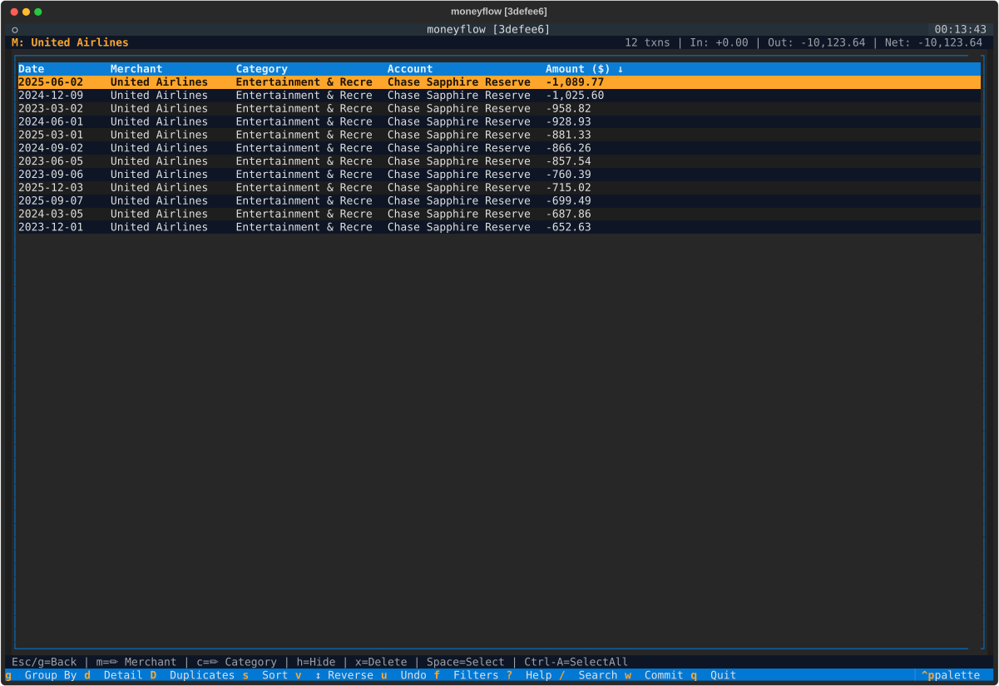
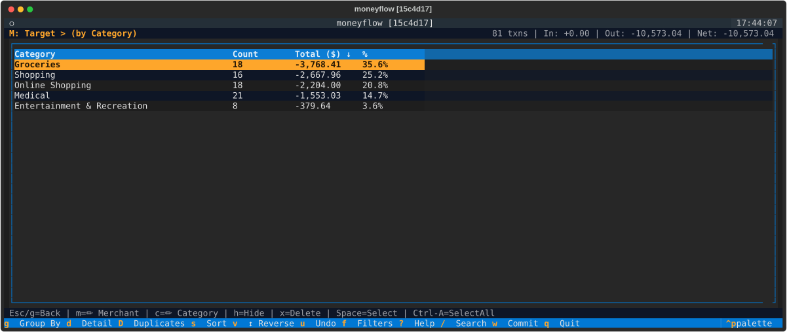
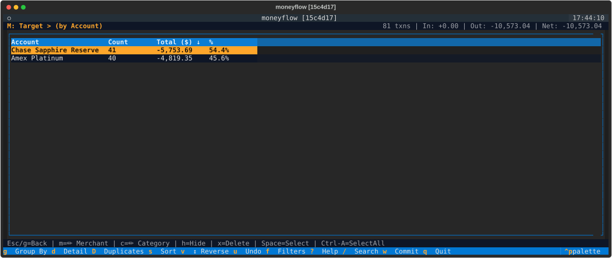
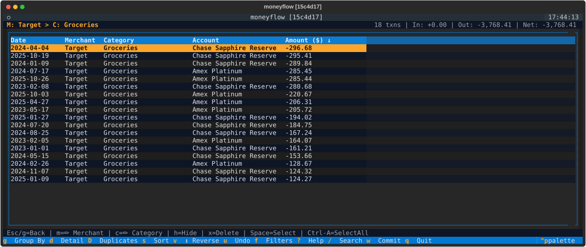
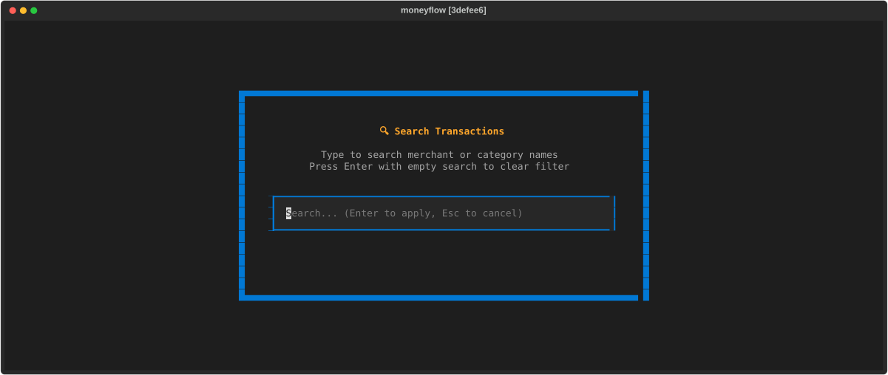
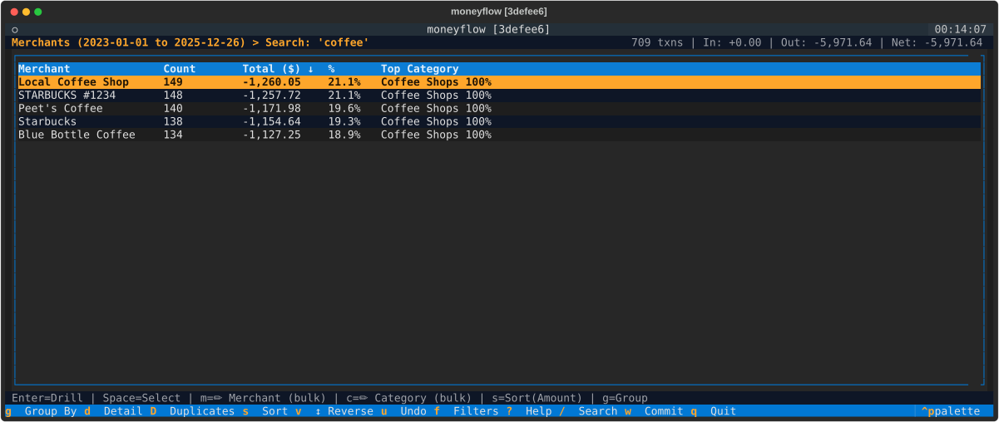

Navigation & Search
moneyflow provides multiple views of your transaction data and powerful drill-down capabilities to analyze spending from different angles.
View Types
Aggregate Views
Press g to cycle through aggregate views. Aggregate views group your transactions by a specific field (merchant,
category, group, account, or time) and display summary statistics for each group, including transaction count and total
amount spent.
Cycle Order: Merchant → Category → Group → Account → Time → Merchant...
Merchant View
|
Category View
|
Group View
|
Account View
|
TIME View (by Years)
|
TIME View (by Months)
|
TIME View (by Days)
|
| View | What It Shows | Use For |
|---|---|---|
| Merchant | Spending by store/service + top category | See patterns by merchant (e.g., total spent at Amazon) |
| Category | Spending by category | Identify which categories consume your budget |
| Group | Spending by category group | Monthly budget reviews, broad spending patterns |
| Account | Spending by payment method | Reconciliation, per-account spending analysis |
| Time | Spending by time period (years, months, or days) | Analyze spending trends over time, year-over-year comparisons |
Columns displayed:
- Name, Count, Total (all aggregate views)
- Top Category (Merchant view only) - Shows the most common category for each merchant with percentage (e.g., "Groceries 90%"). This helps identify categorization patterns and spot miscategorized transactions.
Top Category Column
The Top Category column in Merchant view shows at a glance whether a merchant is properly categorized:
- 100% = All transactions use the same category (consistent)
- 85% = Mostly one category (likely correct)
- 60% = Mixed categorization (may need cleanup)
Example: "Whole Foods → Groceries 95%" confirms most purchases are correctly categorized.
Amazon Mode: View names reflect purchase data instead of financial transactions.
| Default Backend | Amazon Mode | Shows |
|---|---|---|
| Merchant | Item | Product names |
| Category | Category | Product categories |
| Group | Group | Category groups |
| Account | Order ID | Amazon orders |
Detail View
Press d to view all transactions ungrouped in chronological order,
or press Enter from any aggregate row to see the transactions for that specific item.
To return to an aggregate view, press g or Escape.
Columns displayed:
- Date
- Merchant
- Category
- Account
- Amount
Visual indicators:
| Indicator | Meaning |
|---|---|
| ✓ | Transaction selected for bulk operations |
| H | Transaction hidden from reports |
| * | Transaction has pending edits |
Capabilities:
- Edit merchant names, categories, and hide status
- Multi-select for bulk operations
- View full transaction details

Drill-Down
From any aggregate view, press Enter on a row to drill into it and see the individual transactions that make up that aggregate.

Example workflow:
- Start in Merchant view - Press
gif needed to cycle to Merchants - Navigate to "Target" - Use arrow keys to move cursor
- Press
Enter- Drill down to see transactions - View results - All Target transactions displayed

The breadcrumb shows your current path: Merchants > Target
Going back:
Press Escape to return to Merchant view with your cursor position and scroll restored.
Sub-Grouping
Once you've drilled down into a specific item, press g to sub-group the filtered data by a different field.
This allows you to analyze the same transactions from multiple perspectives without losing your filter context.
Example - Analyzing Target purchases:
- Drill into Target - From Merchant view, press
Enteron Target row - Press
g- View changes toMerchants > Target (by Category) - Shows Target spending grouped by category
- Press
gagain - View changes toMerchants > Target (by Group) - Shows Target spending grouped by category group
- Press
gagain - View changes toMerchants > Target (by Account) - Shows which payment methods you use at Target
- Press
gagain - View changes toMerchants > Target (by Year) - Shows Target spending trends over time (press
tto cycle granularity) - Press
gagain - Returns to detail view - Shows all Target transactions ungrouped


Sub-grouping helps answer analytical questions like:
- "How much did I spend on groceries from Amazon?"
- "Which credit card do I use most at Starbucks?"
- "What categories make up my Target spending?"
When you're in a drilled-down view, pressing g cycles through the available sub-groupings:
Sub-grouping cycle: Category → Group → Account → Time → Detail → Category...
The field you're already filtered by is automatically excluded from the cycle to avoid redundancy.
Multi-Level Drill-Down
You can drill down from sub-grouped views to add another level of filtering, creating a multi-level filter hierarchy.
Example - Finding Target grocery transactions:
- Drill into Target - From Merchant view, press
Enteron "Target" - Sub-group by Category - Press
grepeatedly until breadcrumb shows "(by Category)" - Drill into Groceries - Press
Enteron the "Groceries" row - View results - Breadcrumb shows:
Merchants > Target > Groceries - Now viewing only Target grocery transactions

This powerful feature lets you combine multiple filters to answer very specific questions about your spending.
Going Back
Press Escape to navigate backwards through your drill-down path, removing one filter level at a time.
From top-level detail view:
- When viewing all transactions (not drilled down), press
gorEscapeto return to an aggregate view - Both keys restore your previous aggregate view (Merchant, Category, Group, or Account)
Single-level drill-down with sub-grouping:
- From
Merchants > Target (by Category), pressEscapeto return toMerchants > Target(clears sub-grouping) - From
Merchants > Target, pressEscapeto return toMerchants(clears merchant filter)
Multi-level drill-down:
- From
Merchants > Target > Groceries, pressEscapeto return toMerchants > Target(removes category filter) - From
Merchants > Target, pressEscapeto return toMerchants(removes merchant filter)
With search active:
- If search was your most recent action, the first
Escapepress clears the search and returns to your previous view - Subsequent
Escapepresses navigate backwards through your drill-down levels
Your cursor position and scroll state are preserved when going back, making it easy to explore different views and return to exactly where you were.
Sorting
Control how rows are sorted in the current view.
Cycle sort fields:
- Press
sto cycle through the available sort fields for the current view - Available fields depend on whether you're in an aggregate or detail view
Reverse sort direction:
- Press
vto reverse the sort direction between ascending and descending
Available sort fields by view type:
- Aggregate Views: Field name (e.g., Merchant, Category), Count (number of transactions), Amount (total spent)
- Detail Views: Date, Merchant name, Category, Account, Amount
Time as an Aggregate Dimension
Time is a first-class aggregate dimension, just like Merchant, Category, Group, or Account. You can view spending grouped by time periods, drill into specific years or months, and combine time with other dimensions for powerful temporal analysis.
TIME View
Press g to cycle to the TIME view, which shows your transactions aggregated by time period. Toggle through three
granularity levels to adjust the time grouping:
- Press
t- Cycle through granularities (Year, then Month, then Day, then back to Year)
Example workflow:
- Press
guntil you reach TIME view - Shows all years in your dataset - Press
t- Toggle to monthly view - Shows all months with data - Press
tagain - Toggle to daily view - Shows all days with data - Press
Enteron a specific period - Drill into that time period - Press
gto sub-group - Pivot by Merchant/Category/etc within that period
Drilling Into Time Periods
From TIME view, press Enter on any year, month, or day to drill down and see only transactions from that period.
Drilled Into Year
|
Drilled Into Month
|
Example:
- In TIME view (showing years 2023, 2024, 2025)
- Press
Enteron 2024 → Breadcrumb showsTime > 2024 - Press
g→ View by Merchants within 2024 - Press
gagain → Cycle through Categories, Groups, Accounts, Time (by month) - Press
Escape→ Back toTime > 2024(detail view) - Press
Escape→ Back to TIME view (all years)
Time + Other Dimensions
Combine time with other dimensions for multi-faceted analysis:
Time-first analysis (Time > 2024 > Merchants):
- Drill into a year/month
- Sub-group by Merchant/Category/Account
- Analyze spending within that time period
Dimension-first with time sub-grouping (Merchants > Amazon > by Year):
- Drill into a merchant/category
- Press
gto sub-group by Year or Month - See spending trends over time for that dimension
Navigate Between Time Periods
When drilled into a specific time period, use arrow keys to navigate forward/backward:
←(Left arrow) - Previous period (e.g., from 2024 to 2023, or from Mar 2024 to Feb 2024)→(Right arrow) - Next period (e.g., from 2024 to 2025, or from Mar 2024 to Apr 2024)a- Clear time period selection (shortcut for Escape)
Arrow keys only work when drilled into a time period. The navigation respects your current granularity (years vs months).
Command-Line Data Loading
For Monarch Money and YNAB backends, you can fetch only recent data for faster startup:
moneyflow --year 2025 # Fetch from 2025-01-01 onwards
moneyflow --since 2024-06-01 # Fetch from specific date onwards
moneyflow --mtd # Fetch month-to-date only
API Fetching vs View Filtering
These flags control what data is fetched from the API, not what you see in the view. Once data is loaded, all of it is visible by default. Use TIME view to analyze specific periods.
Search
Press / to search and filter transactions by text matching across merchant names, categories, and transaction notes.

Using search:
- Press
/- Opens the search modal - Type your query - Filters as you type (case-insensitive, partial matching)
- Press
Enter- Applies the search filter - Press
Escape- Clears search and returns to previous view

Search filters persist as you navigate between different views. The breadcrumb displays "Search: your query" to remind
you that search is active. To clear a search, press / again and submit an empty search, or press Escape if search
was your most recent action.
Multi-Select
Select multiple transactions or aggregate groups to perform bulk operations.
Selecting rows:
- Press
Spaceto toggle selection on the current row - Press
Ctrl+Ato select all visible rows in the current view - Selected rows display a checkmark indicator
Bulk operations available:
- Rename merchants across multiple transactions
- Change categories for multiple transactions
- Hide or unhide multiple transactions from reports
Common Use Cases
Here are some practical examples of using moneyflow's navigation features to answer real questions about your spending:
"What do I buy at Costco?"
- Navigate to Merchant view - Press
guntil you see Merchants - Drill into Costco - Move cursor to "Costco", press
Enter - Sub-group by Category - Press
guntil breadcrumb shows "(by Category)" - View breakdown - See Groceries $450, Gas $120, etc.
"Where am I buying groceries?"
- Navigate to Category view - Press
guntil you see Categories - Drill into Groceries - Move cursor to "Groceries", press
Enter - Sub-group by Merchant - Press
guntil breadcrumb shows "(by Merchant)" - View breakdown - See Whole Foods $890, Safeway $650, Amazon $234
"How do I use my Chase Sapphire card?"
- Navigate to Account view - Press
guntil you see Accounts - Drill into Chase Sapphire - Move cursor to "Chase Sapphire", press
Enter - Sub-group by Category - Press
guntil breadcrumb shows "(by Category)" - View breakdown - See spending by category for this card
"How has my spending changed over time?"
- Navigate to TIME view - Press
guntil you see Years - Review annual totals - See 2023: $45,000, 2024: $52,000, 2025: $48,000
- Toggle to months - Press
tto see monthly breakdown - Drill into a month - Press
Enteron "Mar 2024" to see that month's transactions - Navigate months - Use
←→to move between months
"How has my Amazon spending trended?"
- Navigate to Merchant view - Press
guntil you see Merchants - Drill into Amazon - Move cursor to "Amazon", press
Enter - Sub-group by Year - Press
guntil breadcrumb shows "(by Year)" - View year-over-year - See 2023: $2,500, 2024: $3,200, 2025: $2,800
- Toggle to months - Press
tto see monthly Amazon spending - Drill deeper - Press
Enteron a specific year to see all Amazon transactions from that year
Quick Analysis Tip:
- When drilled down,
gbecomes your pivot tool for viewing the same filtered data from different perspectives - No need to go back to the top-level view and re-filter
- Time works symmetrically: drill into Time then pivot by dimension, OR drill into dimension then sub-group by time
Quick Reference
| Key | Action |
|---|---|
g |
Cycle aggregate views (includes TIME), or return to aggregate view from detail view |
d |
Detail view (all transactions) |
Enter |
Drill down |
Escape |
Go back (or return to aggregate view from detail view) |
s |
Cycle sort field |
v |
Reverse sort |
/ |
Search |
f |
Filters |
Space |
Select row |
Ctrl+A |
Select all |
m / c / h |
Edit selected transaction(s) |
x |
Delete selected transaction(s) |
u |
Undo pending edit |
w |
Commit pending edits |
t |
Cycle time granularity (Year → Month → Day) in TIME view |
a |
Clear time period drill-down |
← / → |
Navigate time periods (when drilled into time) |
For the complete list of keyboard shortcuts, see Keyboard Shortcuts.